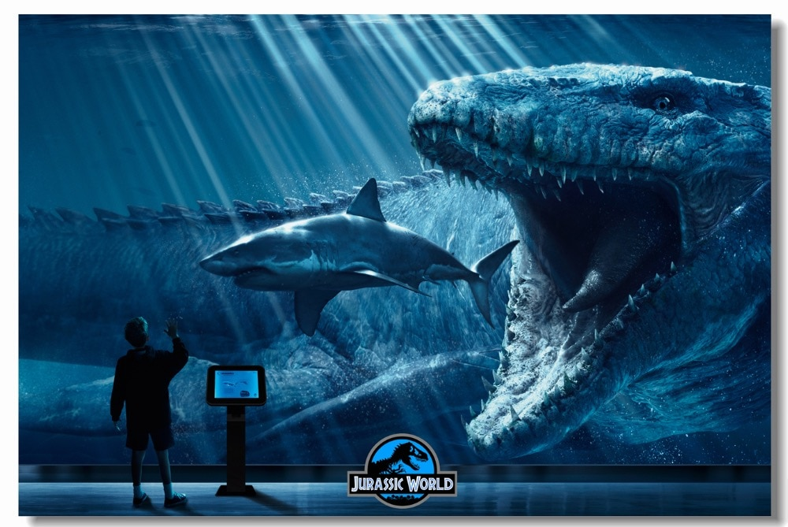
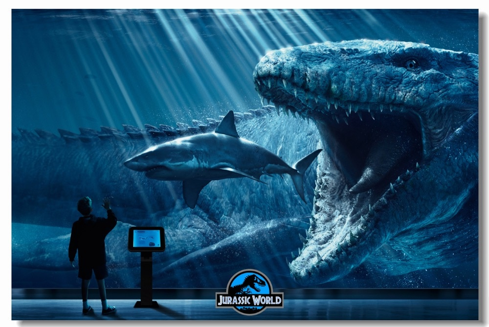

Jurassic World
Dinosaurs lived around 65 million years ago, and the movie franchise "Jurassic Park" revived those extinct animals and brought them back to life. Many of these dinosaurs, such as Tyrannosaurus Rex, Velociraptor, Mosasaurus, and even hybrids/superhybrids like Indominus Rex and Indoraptor, had the capability of wreaking havoc in the theme park. They all were extremely menacing in their own way. The T-Rex is already indimidating by its roar, and is known to have killed a couple of park staff. The Mosasaurus is well-known for leaping out of the water at extreme heights and swallowing sharks and people whole. The Indominus Rex is scary, partly due to the fact that it has bulletproof skin and a huge appetite for humans. But, which dinosaur was the most deadliest?
Right now, let's first look at each of these dinosaurs' names. Typically, the origin and meaning behind the name clearly represents the behavior and deadliness of the dinosaur. Tyrannosaurus Rex stands for "tyrant king", Velociraptor stands for "swift seizer", and Mosasaurus stands for "Meuse River lizard". As for the hybrids, Indominus Rex stands for "untameable king", and Indoraptor stands for "indomitable thief". The three names that clearly stick out are the T-Rex, Indominus Rex, and Indoraptor. They give a sense of utmost danger and strike much fear into their victims, and also indirectly give a hint of their enormous sizes.
Now, we have shortened the list down to the T-Rex, Indominus Rex, and Indoraptor. Let's observe their smartness level. This component is always key to the level of a dinosaur's deadliness level, since all predators need to be quick-witted and smart in order to be able to kill their prey. The T-Rex is not very smart and is only aggressive. The Indominus Rex is much smarter than the T-Rex, due to the fact that it could easily fool the humans by tricking them into thinking that it escaped. Last of all, the Indoraptor is probably the most smartest dinosaur ever. It learned how to open doors, identify glass and a potential fall, and even teases its victims. This evidence leads to the conclusion that the Indoraptor is definitely the most deadliest dinosaur ever to walk the face of planet Earth.
Some of the Most Famous Jurassic Park and Jurassic World Dinosaurs
- Tyrannosaurus Rex
- Indominus Rex
- Indoraptor
- Velociraptor
- Mosasaurus
- Baryonyx
- Ankylosaurus
- Brachiosaurus
- Parasaurolophus
- Corythosaurus
- Allosaurus
- Dilophosaurus
- Triceratops
- Carnotaurus
- Gallimimus
- Compsognathus
- Spinosaurus
- Stegosaurus
- Stegoceratops
- Dimorphodon
- Pteranodon
- Pachycephalosaurus
- Stygimoloch
- Nasutoceratops
The Names of the Raptors in Jurassic World
- Blue
- Delta
- Echo
- Charlie
| Dinosaur Name |
Meaning |
Smartness Level (Out of 10) |
Overall Danger Level (Out of 10) |
Size (Out of 10) |
Main Diet |
| Tyrannosaurus Rex |
"tyrant king" |
7 |
8 |
9 |
ceratopsians, hadrosaurs, goats |
| Indominus Rex (Tyrannosaurus Rex, Velociraptor, Carnotaurus/Allosaurus, Rugops, etc.) |
"untameable king" |
9 |
9 |
9 |
ankylosaurus, other medium/large herbivores |
| Indoraptor (Indominus Rex + Velociraptor DNA) |
"indomitable thief" |
10 |
10 |
7 |
almost anything that comes in its way |
| Velociraptor |
"swift seizer" |
8 |
6 |
6 |
raw meat, pigs |
| Mosasaurus |
"Meuse River lizard" |
7 |
10 (if in water) |
10 |
sharks, other aquatic animals smaller than it |
To learn more about the dinosaurs of Jurassic World, click here.
 
